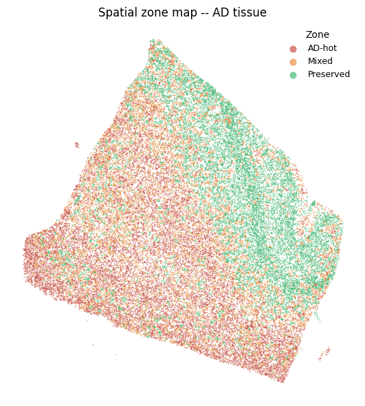

Jagadrupa Sahoo
I am a bioinformatician working towards neuroscience and computational neuroscience. I study how the cells of the human cortex are reorganised in Alzheimer's disease, and I am interested in how molecular change becomes a change in what neural circuits do.
Why neuroscience and computational neuroscience
Where I started
I trained in biotechnology and bioinformatics, with a particular interest in neuroscience from the outset: my first research as an undergraduate was on neurodegeneration.
What drew me to the brain
The brain is the most intricate system in biology: billions of cells whose coordinated activity gives rise to perception, memory and thought. What holds my attention most is how it fails in neurodegenerative disease, where particular cells and circuits are lost while others are spared.
Where I am heading
I want to study how neurons and neural circuits compute, and how that computation breaks down in disease, combining computational models with molecular and imaging data. My aim is graduate training and research in neuroscience and computational neuroscience.
Education and research
My path in neuroscience
Featured project

Independent research project · 2026
Spatial transcriptomics of human Alzheimer's cortex
Conclusion
In this tissue the oligodendrocyte lineage, the cells that make myelin, is more numerous, less mature, less coherent in its myelin programme, and concentrated in the zones where pathology is highest. The change is spatially organised and not uniform, and the most disturbed zones impose a shared signature on every cell type living in them. The core signal survives a test against an independent atlas.
Read the project →Research
All projects, by where they were done. Select a project for the detail.
What I can do
Practical skills, grouped by where I use them. Select an area to open it. The courses and certificates behind them are on the Skills and certificates page.
Used across all of my research
Coursework, written up as my own notes and simulations, and the Alzheimer's project
Independent projects, research at TUM and coursework
Research at TUM, my MSc and independent projects
Practical training during my BSc in Biotechnology, my bachelor's project and a research internship
Contact
I am glad to hear from researchers and programmes working in neuroscience and computational neuroscience: jagadrupa.sahoo@gmail.com